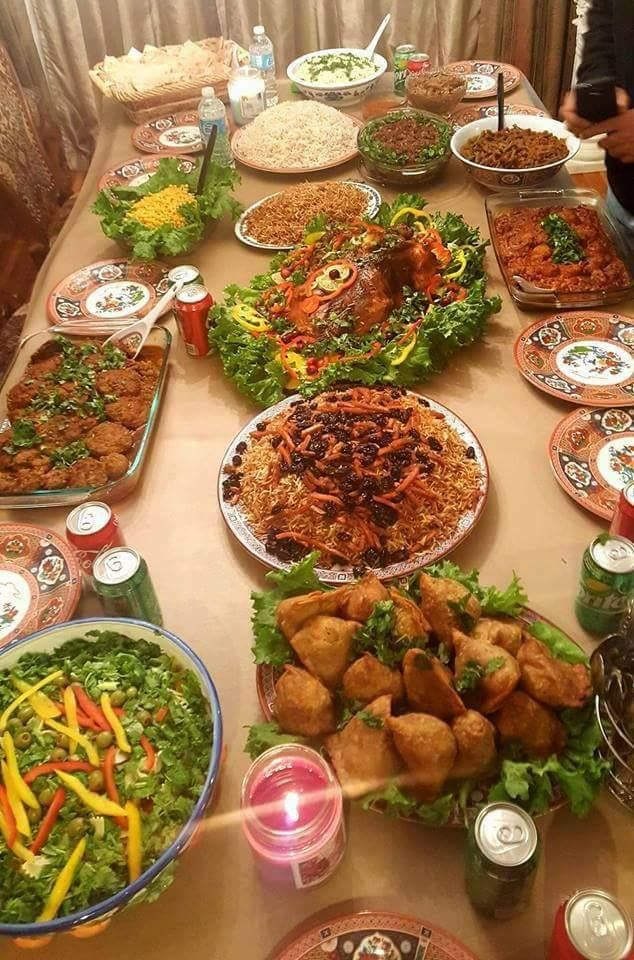
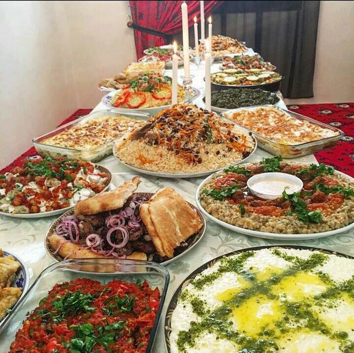
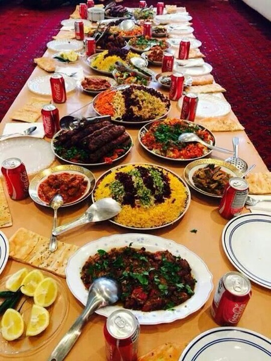
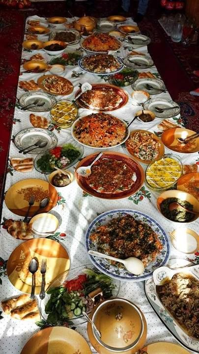
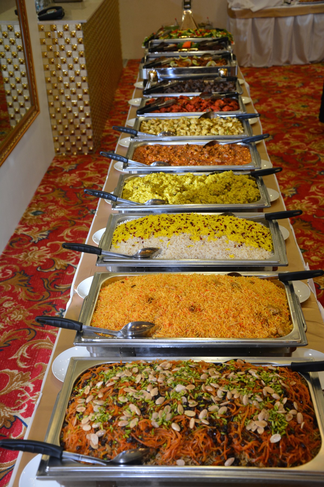
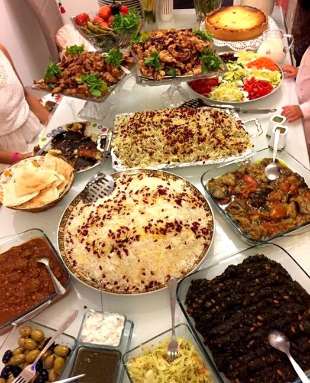

Afghan food goes way back in the day. This type of food is very unique and known around the world as one of the finest cuisine's. There are so many different foods that have exotic tastes. Some examples of Afghan foods around the world are mantu, kabuli palou, ashak, leeti and shola ghorbandi. These are just some examples of Afghan foods there are many more. The taste of Afghan food is not bland. Many Westerns (North America) find that Afghan food is a perfect blend of exotic tastes. Some restaurants you can find today are Naan And Kabob,Bamiyan Kabob and Tandoori kabob. These restaurants are very famous around North America. Even the way they have prepared dishes have changed from time to time. Nowadays most people use ovens or stoves to prepare there dishes, but a lot of the population in Afghanistan still dig holes in the ground and make fires and then on the top they put the pot. Most of the population believes when preparing dishes this way is more efficient because they believe this is the true way of making the food and they also believe since our grandparents have prepared food this way for very long time they want to continue this tradition. Not knowing that is tastes the same made from the oven/stove or on the fire.
     Tajik have created kabuli and bolani ( main dishes served by Tajik). Kabuli is rice with raisons, meat and carrots, bolani is dough and inside there could be crushed potatos or spinach. Pashtun have created shorwa. Shorwa is soup with many different vegetables added to it, it has an exotic taste that will make your taste buds go wild. Ozbek have created ashak and mantu. Ashak is basically dumplings with spinach inside and beans on top of it. Mantu is the more prefered dish over ashak because it is basically the same but it has beef and onions inside and on the top of it there are chick peas. Hazara have created aush with kashk. This dish is noodles with qurti. This is one of there favourite dishes they prefer to make during mehmani (Having Guests Over).
Top